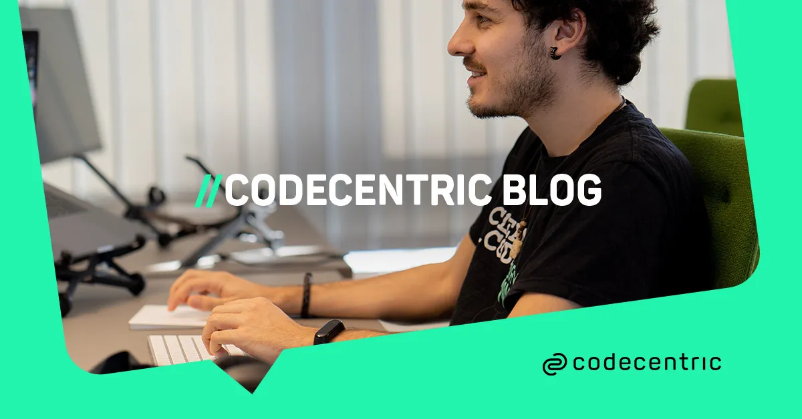
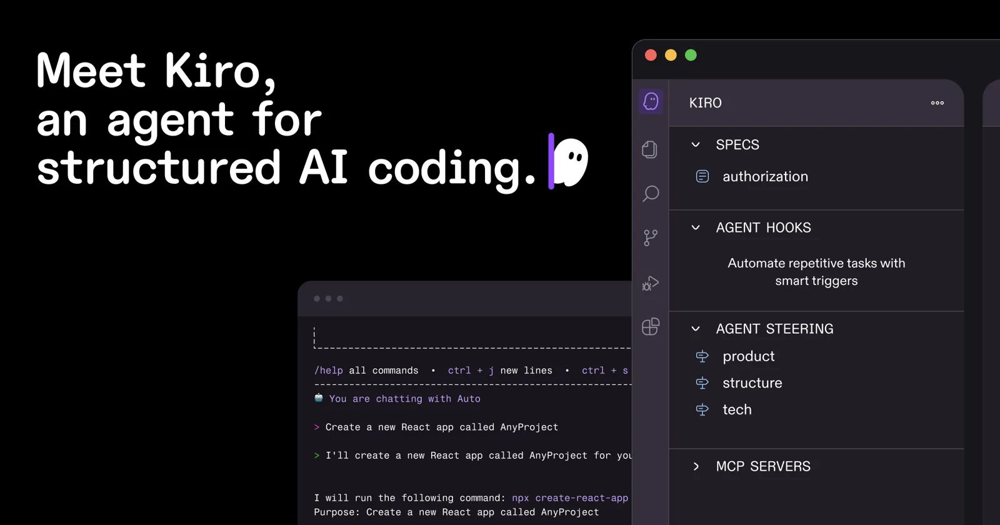

The 2026 AI Playbook
for BA · FA · PO
Role-by-role guide to adopting AI across the full requirements lifecycle — from discovery through backlog, specs, and stakeholder reporting.
AI output quality is bounded by input structure. Attaching EventStorming board artifacts to an LLM prompt produced 3× more domain concepts than unstructured prose. EARS "shall" statements produce requirements that AI coding agents can parse as executable contracts. The shared failure mode across every task type is treating AI as a shortcut that works on messy inputs.
- Attach EventStorming / Domain Storytelling artifacts to LLM prompts for richer elicitation
- Generate structured interview guides and stakeholder question banks
- Convert meeting transcripts → action items pushed to Jira/ADO
- Draft EARS-formatted requirements from feature briefs
- Produce audience-tailored executive summaries from technical outputs
- Author specs for two audiences simultaneously: human reviewers and AI coding agents
- Validate existing requirements against EARS notation with Inflectra.ai or Copilot4DevOps
- Generate BDD Gherkin scenarios as a coverage scaffold (then add edge cases manually)
- Detect duplicate and contradicting requirements across large backlogs
- Produce traceability matrices from spec to test case automatically
- Score backlog items with WSJF / RICE / Kano using structured prompts (use AI scores for ranking, not absolute estimates)
- Synthesise customer feedback themes from multiple unstructured sources
- Auto-generate Sprint Review narrative from Jira/ADO data
- Translate roadmap into audience tiers: exec summary vs. engineering detail
- Assign GitHub Copilot to backlog issues with well-written acceptance criteria

EventStorming artifacts as LLM input
A prototype using EventStorming board photos as LLM context produced 9 schemas vs 3 from unstructured prose — same model, same prompt structure, better input. Codecentric case study
The implication: EventStorming, Domain Storytelling, and EARS aren't "extra process." They're the precision instruments that determine the ceiling of every downstream AI output.
Human Reader Needs
- Narrative context explaining the business motivation
- Rationale for trade-offs and non-obvious constraints
- Clear ownership and approval chains (RACI)
- Plain-language success criteria stakeholders can sign off on
- Diagrams and examples for shared understanding
AI Coding Agent Needs
- EARS "shall" statements: unambiguous, single-behaviour
- Explicit edge cases and negative scenarios in GWT format
- Structured headings + bullet points (models parse better than prose)
- Quantified non-functionals: "< 200 ms", "≥ 99.9% uptime"
- Agent-optimised format: CLAUDE.md, .cursorrules, or Kiro spec layer
Kiro — AWS's Answer to Structureless Agentic Coding
Launched internationally May 2026. Kiro operates at the specification layer first — before writing a single line of code, it forces formalisation of intent into a structured spec using EARS notation with formal logic to catch contradictions. Represents the "spec-as-source" maturity level where humans edit only specs, never code directly.
Comparable tools at different maturity levels: Jira Rovo (spec-anchored, integrated with existing workflow), Copilot4DevOps (generates FRDs natively in Azure DevOps).

Role: Senior Business Analyst preparing for a stakeholder discovery session. Context: [Project name] — a [domain] system being built for [user group]. The primary stakeholder is [role, e.g. Head of Operations]. Task: Generate a structured interview guide with: • 5 opening questions to surface the business problem (not the solution) • 4 questions to uncover tacit knowledge and undocumented workarounds • 3 questions to identify constraints (regulatory, technical, organisational) • 2 closing questions to confirm understanding and agree next steps Constraints: No leading questions. Avoid solution-first framing. Each question should be open-ended and invite narrative. Output format: Numbered list grouped by section, with a one-line "why this question" note per item.
Role: Functional Analyst writing machine-parseable requirements. Context: Feature: [feature description in plain language] System: [system name and brief description] Actors: [list the actors involved] Task: Convert the above into EARS-formatted requirements using the correct template for each type: • Ubiquitous: The [system] shall [action] • Event-driven: When [trigger], the [system] shall [response] • State-driven: While [state], the [system] shall [action] • Optional: Where [feature] is included, the [system] shall [action] Constraints: Each statement covers exactly one behaviour. No compound "and/or" in a single requirement. Quantify non-functionals (e.g. "within 500 ms", "≥ 99.5% uptime"). Output format: Table with columns: ID | EARS Type | Requirement | Rationale
Role: Product Owner prioritising the next sprint's candidates. Context: Product: [product name]. Current sprint goal: [goal]. Stories for scoring: [paste story titles and one-line descriptions] Task: 1. Score each story on WSJF components (1–10 scale): • User/Business Value, Time Criticality, Risk Reduction, Job Size WSJF = (Value + Time + Risk) / Size 2. Classify each story by Kano category: • Must-Have / Performance / Excitement / Indifferent 3. Flag any story where Job Size > 5 as a split candidate. Important: Use WSJF scores for relative ranking ONLY. Job size estimates from AI run 10–20× too high for absolute planning. Output format: Ranked table: Story | Value | Time | Risk | Size | WSJF | Kano | Split?
Role: BA / PO producing a Sprint Review summary. Context: Sprint: [sprint number/name]. Goal: [sprint goal] Completed: [list stories done] Incomplete: [list stories carried over, with reason] Impediments: [list blockers encountered] Metrics: Velocity [N] pts. Burn-up: [status] Task: Produce THREE versions of the status report: A. Executive (≤ 5 bullet points) — business impact language, no jargon B. Steering / Sponsor (1 page) — decisions needed, risks, timeline impact C. Team retrospective input — honest, blameless, focused on process Output format: Three labelled sections. Version A must lead with the sprint goal outcome (achieved / partial / missed) in the first sentence.
- 1. Use ChatGPT/Claude for meeting summaries and report drafts
- 2. Prompt-engineer story splitting and backlog scoring
- 3. Generate acceptance criteria drafts for human review
- 4. Add integration to Jira/ADO when patterns stabilise
- 1. Adopt EventStorming for domain discovery (2–4 week ramp)
- 2. Standardise EARS notation for requirements writing
- 3. Build spec dual-audience writing habit (human + AI agent)
- 4. Layer AI tools on top of structured artifacts for 3× multiplier